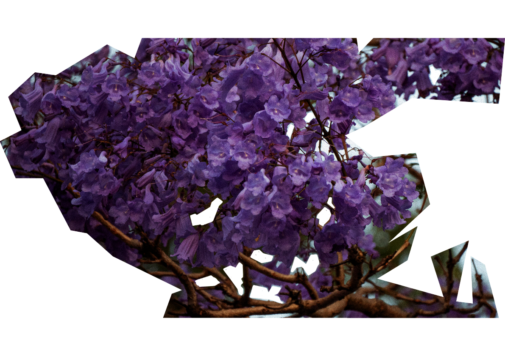
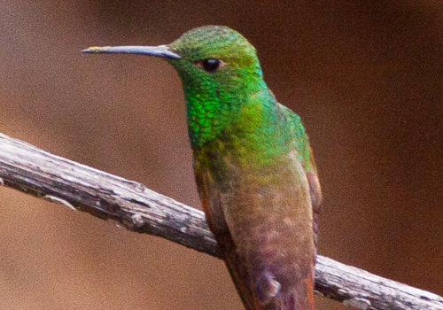

X
COLIBRÍ
SAUCEROTTIA BERYLLINA
Un pequeño pájaro polinizador, endémico de México.
Se observó en Miguel Ángel de Quevedo ántes de mediodía comiendo de una jacaranda.
Se alimenta principalmente de néctar y prefiere las flores rojas. Come también áfidos, insectos y arañas.
